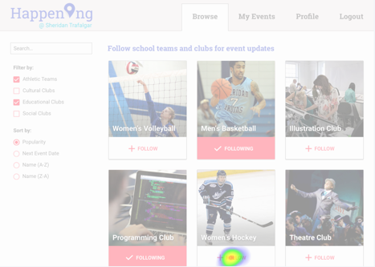
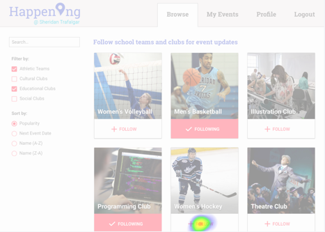
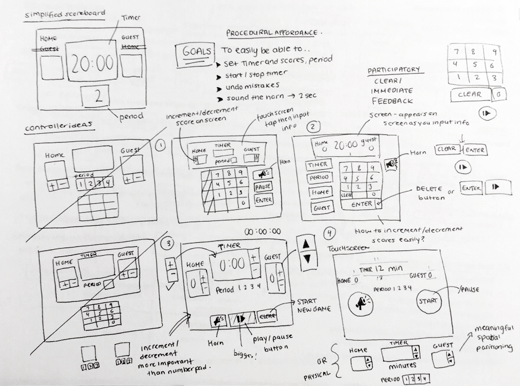
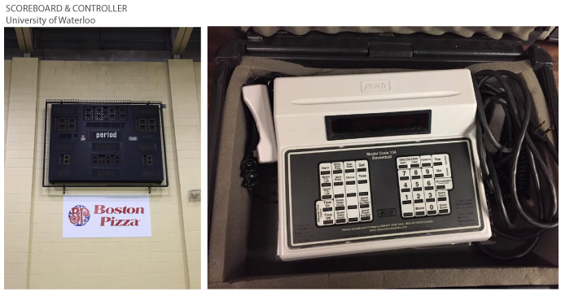
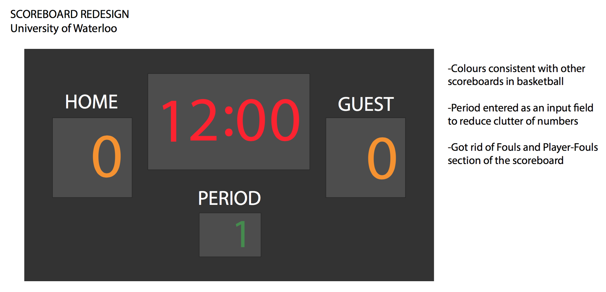
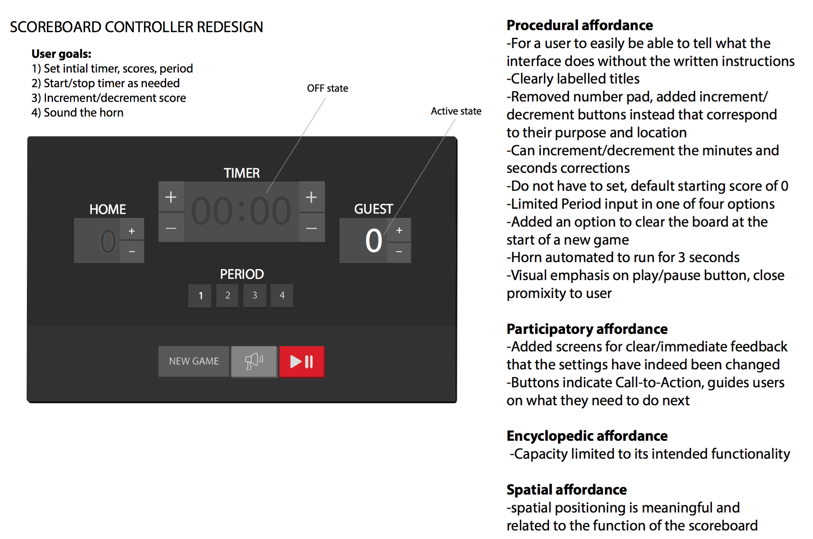
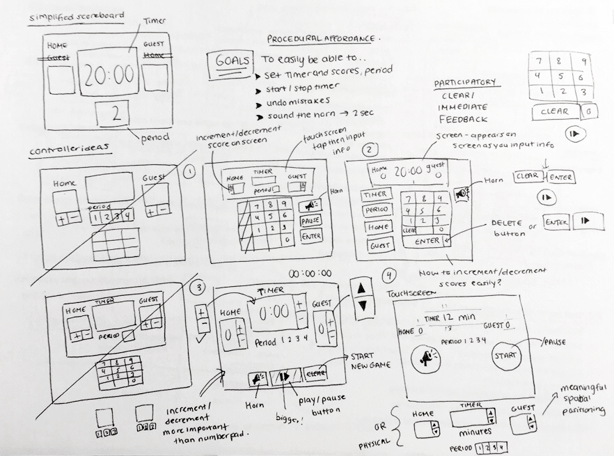
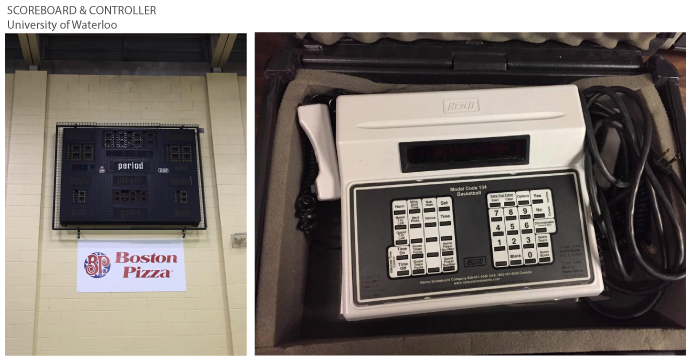
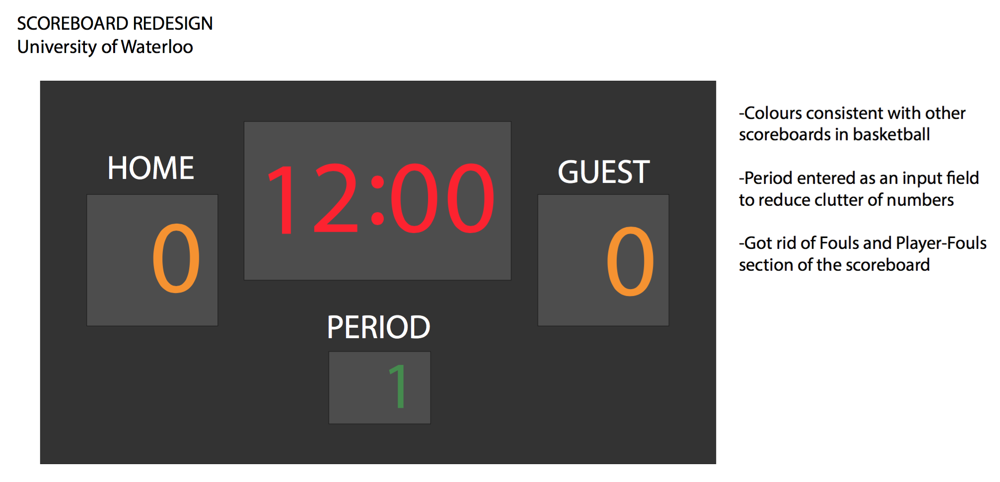
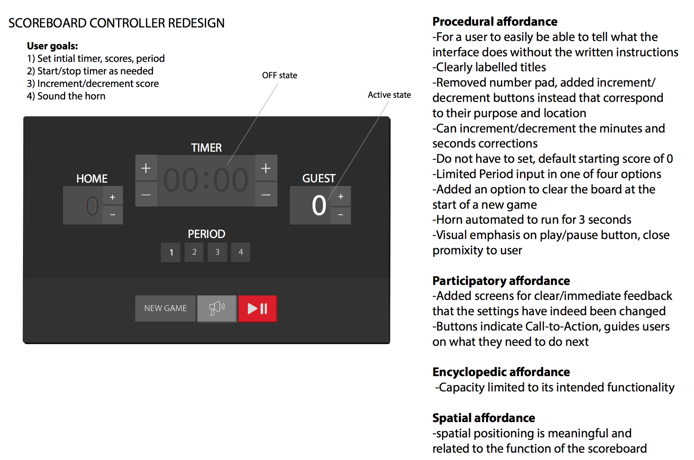

Prototyping
Develop interactive prototypes with tools such as Sketch, Illustrator and Invision.

 

Userflow
The path that users follow as they navigate through the website's interface to complete a task.

Empathy Map
Access the environment, behaviour, concerns and aspirations of a user.

User Journey
Analysis of user behavior, pain points, motivations, and needs.


Interaction Map
Defines the users' logic; consisting of steps needed to be performed in order to complete a task.

Physical Interface Redesign
 






